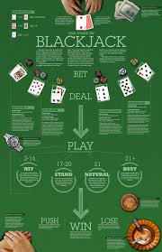

In Blackjack, each player competes against the dealer rather than against other players. The dealer is typically required to hit on a hand of 16 or less, and must stand on a hand of 17 or more. The goal is to have a hand value higher than the dealer's without exceeding 21 points. If a player goes over 21, they automatically lose the round, regardless of the dealer's hand.
Players are initially dealt two cards, both face-up, while the dealer gets one card face-up and one face-down. The player can choose to "hit" (request an additional card) or "stand" (keep their current hand). If a player is dealt an Ace and a 10-point card (10, Jack, Queen, King) as their initial two cards, they have a "Blackjack," which is an automatic win unless the dealer also has a Blackjack.
In addition to hitting and standing, players can also "double down," where they double their original bet and receive only one more card, or "split" pairs of cards into two separate hands and continue playing both hands. Understanding when to use these options is essential to mastering the game, as it can significantly improve a player's chances of winning.
Watch a video about the rules of blackjack below: